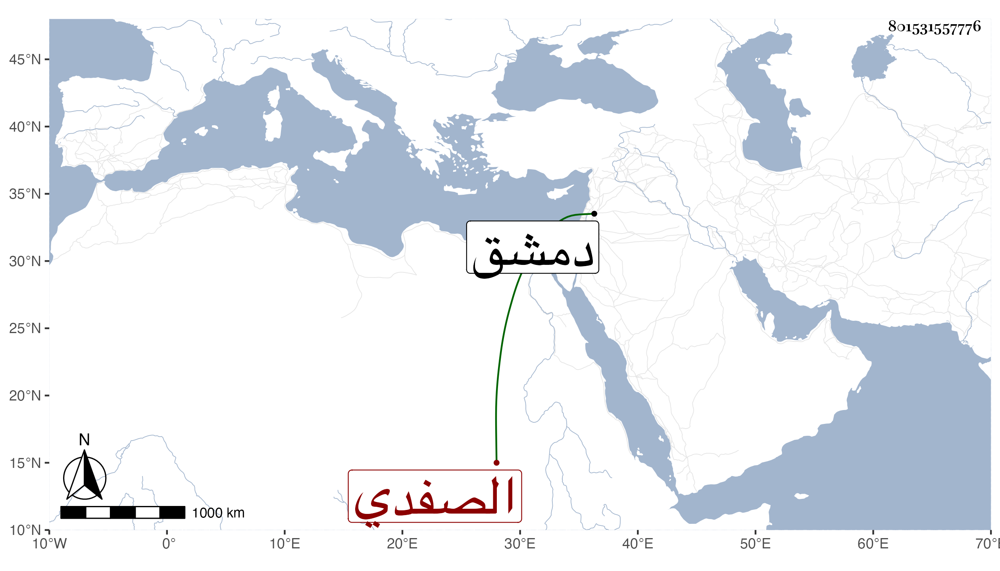

0902Sakhawi.DawLamic.ITO20230111-ara1.EIS1600.801531557776
Biography ID: 801531557776
261
محمد بن عبد الله أمين الدين الصفدي ، ذكره شيخنا في إنبائه وقال كان من مسلمة السامرة وسكن دمشق بعد الكائنة العظمى وكان عالما بالطب مستحضرا ولكنه لم يكن ماهرا بالمعالجة بل إذا شخص له غيره المرض نقل أقوال أهل الفن فيه وكذا كان بارع الخط فرتب موقعا ، واعترته في آخر عمره غفلة بحيث صار يسأل عن الشيء في حال كونه يفعله فينكره لشدة ذهوله . مات في صفر سنة خمس عشرة .
